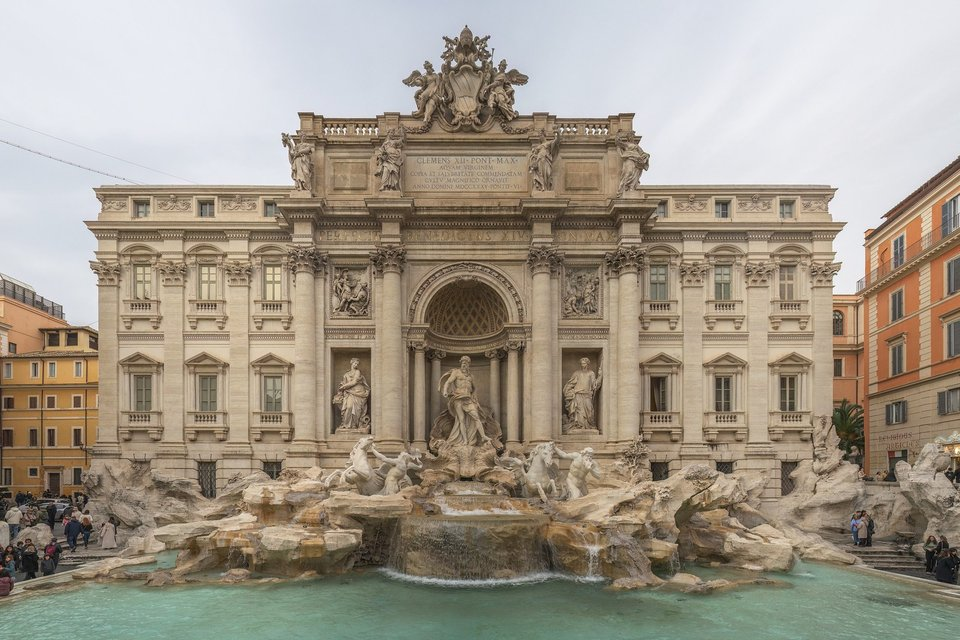

Italy · Rome
Navona, Trevi & the Spanish Steps audio guide
7 stops · 11 min
This guide is free
Every recorded stop plays here.
A free seven-stop walk linking Rome's great Baroque squares and fountains between Piazza Navona and the Spanish Steps. Along pedestrian lanes, connecting an ancient stadium, a Roman temple façade, and theatrical papal waterworks. Listen here, or get the Earwise app to play as you walk.
Stops
- 1
A stadium turned into a square
Start at the southern end of Piazza Navona to see how its long oval outline preserves the exact track of Emperor Domitian's first-century stadium.
Play0:00 / –:––Read along
You're now in Piazza Navona, perhaps the most beautiful square in Rome. Look at its shape: long, narrow and rounded at the far end. Does it remind you of a racetrack?
That's because it was one. Nearly two thousand years ago, the emperor Domitian built a stadium here for athletic games, in the Greek style. It held around 30,000 spectators. When the stadium fell into ruin, Romans built their houses on top of the old seating, so the buildings around you still follow its exact outline. The open square is where the athletes once raced.
The stadium measured about two hundred and seventy-five metres by a hundred and six. It was built of brick, faced with moulded and painted stucco, while its outer façade and the pillars of its inner passage were of travertine.
In the 1600s, Pope Innocent the Tenth, from the Pamphili family, whose palace faced onto the square, turned it into a showcase of Baroque art. Every summer weekend in August, for two centuries, the square was even flooded for spectacular water festivals.
The fountain beside you is the Fountain of the Moor. Its basin and tritons were made by Giacomo della Porta in 1575, and in the 1650s Bernini designed the central figure wrestling a dolphin.
According to Christian tradition, the young Saint Agnes was martyred here, in the arches of Domitian's stadium. The church in the middle of the square is dedicated to her.
- 2
Bernini's Four Rivers
Walk to the centre of the square to unpack Bernini's Fountain of the Four Rivers, set beneath an Egyptian obelisk and facing Borromini's church.
Play0:00 / –:––Read along
You're now looking at the Fountain of the Four Rivers, one of Gian Lorenzo Bernini's masterpieces, finished in 1651 for Pope Innocent the Tenth.
Bernini imagined a great cliff of rock, hollowed into a cave, holding up an obelisk. The obelisk isn't Egyptian at all, but a Roman copy from Domitian's time, found lying in pieces beside the Appian Way. On top sits a bronze dove with an olive branch, the emblem of the pope's family.
Bernini built it between 1648 and 1651. The rock is travertine, pierced right through so that light and water pass beneath the obelisk, and the obelisk itself is granite. The four giants were carved to his design by sculptors working with him: Antonio Raggi, Claude Poussin, Giacomo Antonio Fancelli and Francesco Baratta.
At the four corners sit four giant river gods, one for each continent known at the time. Walk around and find them. The Danube, for Europe, has a horse beside him. The Ganges, for Asia, holds a long oar. The Nile, for Africa, has his head covered with a cloth, usually explained by the fact that in Bernini's day nobody knew where the Nile's source was. And the Río de la Plata, for the Americas, throws up his arm, and look closely: there's an armadillo next to him.
Now, the famous story. Romans love to say that the Río de la Plata is raising his hand in horror at the church of Sant'Agnese, designed by Bernini's great rival, Francesco Borromini, as if it might fall down. It's a great story, but it isn't true. The fountain was finished before Borromini even started work on the church.
Bernini won the commission by making a silver model of his design.
- 3
A temple inside an office
Detour into Piazza di Pietra where eleven monumental marble columns from Hadrian's second-century temple stand embedded in a later palace wall.
Play0:00 / –:––Read along
You're now looking at the Temple of Hadrian, one of Rome's great surprises: an ancient temple with a modern office building built into it.
The temple was dedicated in AD 145 to the emperor Hadrian, the man who rebuilt the Pantheon, after his death, when he was honoured as a god. It was built by his adopted son and successor, Antoninus Pius.
Eleven of its marble columns still stand, along with one wall. In the 1600s the temple was built into a papal palace, and later the building became home to Rome's stock exchange and its Chamber of Commerce. So for centuries, business deals were done behind the columns of a Roman temple.
The square takes its name from those stones: Piazza di Pietra means "Square of Stone".
The columns are fluted, with long grooves running up their length, and topped with Corinthian capitals carved with acanthus leaves.
- 4
Marcus Aurelius's column
Pause in Piazza Colonna beneath the towering marble column of Marcus Aurelius, wrapped in spiral reliefs of his northern campaigns.
Play0:00 / –:––Read along
You're now looking at the Column of Marcus Aurelius. This column was raised in honour of the emperor Marcus Aurelius, who ruled from 161 to 180.
But the column celebrates his wars. Look at the band of carvings winding around it. It spirals up twenty-one times, telling the story of his campaigns against Germanic and Sarmatian peoples north of the Danube. Soldiers march, cross rivers and build camps. One famous scene shows a miracle: a sudden storm coming to the rescue of the Roman army.
The column was finished around 193, after his death, and was modelled on Trajan's Column near the Forum. The emperor's bronze statue on top disappeared long ago. In 1589, Pope Sixtus the Fifth replaced it with the bronze figure you see now: Saint Paul.
The shaft alone is nearly thirty metres tall, and the whole column, with its base, originally rose nearly forty metres.
- 5
The Trevi Fountain
Arrive at the Trevi Fountain, where Nicola Salvi's theatrical rockwork and figure of Oceanus terminate the ancient Aqua Virgo aqueduct.
Play0:00 / –:––Read along
Here it is: the Trevi Fountain, one of the most famous fountains in the world.
All this water arrives by the Aqua Virgo, or Acqua Vergine, a Roman aqueduct built in 19 BC. It's one of the very few ancient Roman aqueducts that still carries water. The story goes that a young girl showed thirsty Roman soldiers where to find the spring, and that's why it's called the "Virgin" water. Look for the carved panel up on the right of the façade showing her pointing the way.
The fountain itself is Baroque theatre. After a competition in the 1730s, Pope Clement the Twelfth chose a design by the architect Nicola Salvi. Salvi built the fountain right into the back wall of a palace, the Palazzo Poli, as if it were a triumphal arch. It took thirty years. Salvi died before it was finished, and it was completed by Giuseppe Pannini in 1762. The result is about twenty-six metres high and forty-nine metres wide.
The fountain is built mainly of travertine, with the statues in white Carrara marble and some details in stucco.
In the centre, Oceanus, the god of all the waters, rides a giant shell. His chariot is pulled by two sea horses. Look at them: one is wild and rearing, the other calm. Each is held back by a triton. They show the two moods of the sea. On either side stand Abundance, with her overflowing jar, and Health, with a snake drinking from her cup. And all around, water crashes over a cliff of carved rock, with carved plants growing out of the stone.
Now for the tradition. Visitors turn their back to the fountain and throw a coin with the right hand over the left shoulder. They say it means you'll come back to Rome. The coins are collected and given to charity.
In Fellini's 1960 film La Dolce Vita, the actress Anita Ekberg waded into this fountain with Marcello Mastroianni, in one of the most famous scenes in cinema.
- 6
The sinking boat
Reach Piazza di Spagna at the sinking stone boat of the Barcaccia fountain, sculpted at low street water pressure in the 1620s.
Play0:00 / –:––Read along
Meet the Barcaccia, the "longboat", one of the most charming fountains in Rome.
It was made between 1626 and 1629 for Pope Urban the Eighth by Pietro Bernini, father of the famous Gian Lorenzo, who may well have helped. Instead of a classic basin, Pietro carved a stone boat that looks as if it's sinking, with water spilling over its sides. Look at the two big suns spouting water in the boat, and the cannon-mouths at each end. And look for the bees on the coats of arms: the emblem of the pope's family, the Barberini.
Why is the fountain sunk below the level of the street? The water from the Acqua Vergine, the same aqueduct as the Trevi, arrives here with very little pressure. So Bernini set it low, to make the most of it.
There's also a legend that, after a great flood of the Tiber in 1598, a boat was left stranded in this square, and that gave Bernini the idea.
Now look to the right of the steps, at the house on the corner. The English poet John Keats lived there, and died there in 1821. Today it's a museum in his memory. It's said he could hear this fountain from his bed. His epitaph reads: "Here lies one whose name was writ in water."
This square is called Piazza di Spagna, Spanish Square, after the Spanish Embassy to the Holy See, in the palace at the foot of the steps.
- 7
The Spanish Steps
Climb the Spanish Steps to Trinità dei Monti, built with French funds in the 1720s to link the hilltop church with the embassy quarter below.
Play0:00 / –:––Read along
You're now looking at the Spanish Steps. They were paid for by the French.
At the top stands the French church of the Trinità dei Monti. For well over a century, people talked about building a grand staircase up this steep hillside from the square to the church. In 1660, a French diplomat, Étienne Gueffier, left money in his will to build it. But France and the papacy then argued for decades about who controlled the land, so nothing happened.
Finally, the steps were built between 1723 and 1726, to a design by the Roman architect Francesco De Sanctis. Look at how they flow: curving out and in, splitting and rejoining, with landings where you can stop and look back. There are 135 steps in all.
At the foot of the steps, look for the stone posts carved with eagles and lilies. The eagles belong to the family of the pope who began the work, and the lilies are the emblem of the kings of France. Even the decoration records the long negotiations.
The steps are named after the square below, and the square after the Spanish embassy. So a staircase to a French church, made possible by a French diplomat's bequest, ended up with a Spanish name.
From up here, Rome is at your feet.
The idea of curving walls and pincer-shaped ramps came from a design produced in Bernini's workshop, decades before the steps were finally built.
On the map
All 7 stop pins for this guide are marked. Open map